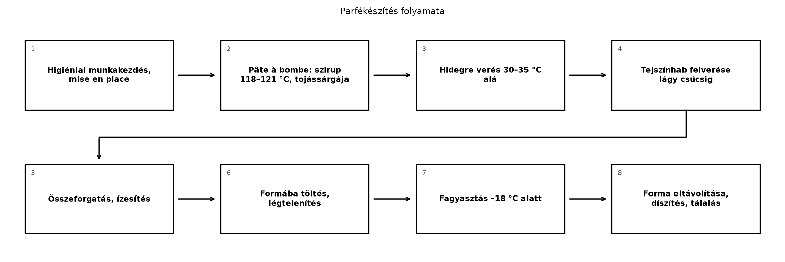

Egy cukrászüzemben a desszertlap nem állhat meg a frissen készült süteményeknél. A fagyasztva tárolható parfé azért hasznos, mert előre, akár napokkal korábban elkészíthető, és tálaláskor csak ki kell formázni, felszeletelni, díszíteni. Ha egy esküvői vacsorára hatvan adag desszertet kell kiadni, a parfé akkor is ad biztonságos, látványos megoldást, ha a konyhában nincs lehetőség az utolsó pillanatban komoly tányérdesszert-összeállításra. A parfé készítése közben a tanuló a cukrászat egyik fontos alapműveletét mélyíti el: a főzött cukros tojássárgája-hab, azaz a pâte à bombe készítését. Ezt a stabil, levegős alapot kell tejszínhabbal, ízesítővel óvatosan összeforgatni, majd fagyasztani úgy, hogy a kész desszert ne legyen jégkristályos, ugyanakkor szeletelhető és selymes legyen.
Képzelj el egy hosszúkás, félgömb vagy szögletes parféformát. A fagyasztott massza kívül feszes, belül levegős, sűrű, vajas-tejszínes állagú. A metszeten finom, apró légbuborékok láthatók, amelyek a pâte à bombe és a tejszínhab keveréséből származnak. A formából való eltávolítás után a parfé oldalán szabályos, sima felület látszik; tetején vagy tányérján gyümölcsöntet, friss bogyós gyümölcs, csokoládélap vagy tejszínhab helyezhető el. Ha túl hidegen tálaljuk, a parfé kőkemény és „fagyis”; ha túl melegen, a forma eltávolításakor megfolyik. A cél a kettő közötti, -12 és -15 °C körüli tálalási hőmérséklet (ellenőrizendő: gyártmány és HACCP-terv szerint).

Definíció. A parfé a cukrászati gyakorlatban olyan fagyasztott desszert, amelynek alapját jellemzően pâte à bombe (főzött cukorral készült tojássárgája-hab) és könnyű tejszínhab adja. A kész masszát formába töltve fagyasztjuk, majd tálaláskor kiformázzuk, szeleteljük vagy adagoljuk.
Definíció. A pâte à bombe meleg cukorsziruppal felvert tojássárgája-hab. A forró szirup egyszerre biztosít édességet, vizet és hőt; a sárgája a melegedés és a mechanikai levegőbevitel hatására kifehéredik, megnő, stabilis, kanalazható habot képez. A hab hőmérsékletét 30–35 °C alá kell csökkenteni, mielőtt tejszínhabbal keverjük.
Definíció. A semifreddo az olasz eredetű, lágyabb, „félig fagyott” desszert, amely technológiájában nagyon hasonlít a parféra. A gyakorlatban a két fogalom gyakran keveredik: a semifreddót rendszerint kissé magasabb hőmérsékleten, lágyabb, kanalazhatóbb állapotban tálalják, mint a formából kivett, szeletelhető parfét. A pontos elnevezést a termékleírás és az üzleti gyakorlat határozza meg.
A parfét legjobban a felhasznált ízesítő, valamint a késztermék formája és tálalási módja szerint csoportosíthatjuk.
| Szempont | Csoport | Példa |
|---|---|---|
| Alap ízesítés | vaníliás, kávés, csokoládés, gyümölcsös, olajos magvas, alkoholos | vaníliás parfé, málna parfé, pisztácia parfé |
| Forma | rúd-, kúp-, félgömb-, gyűrű-, terrine-forma | szögletes parféforma, félgömb szilikonforma |
| Tálalás | szeletelt, adagolt, koktélkehelybe töltött | parfészelet, pohárparfé |
| Különleges igény | alkoholos, koffeintartalmú, diós | kávélikőrös parfé |
Továbbvitt eredmény. A parfé alapjául szolgáló pâte à bombe, a tejszínhabos fellazítás, a fagyasztás, a kiformázás és a hideg tálalás szabályai közvetlenül előkészítik a Fagylaltkelyhek és pohárkrémek alfejezetet, ahol az adagolt hidegcukrászati készítmények összeállítását tanuljuk.
A parfé három fő szerkezeti eleme: a pâte à bombe, a tejszínhab és az ízesítő. A minőség és az élelmiszerbiztonság már az alapanyagok kiválasztásakor eldől.
A pâte à bombe klasszikus tanulási aránya: 100 g tojássárgájához 130–150 g cukor és 35–45 g víz (ellenőrizendő: receptúra és vízminőség szerint). A cukrot és a vizet felforraljuk, és 118–121 °C-ig főzzük. Ha a szirup hidegebb, a hab higabb, kevésbé stabil; ha melegebb, a cukor karamellizálódhat, és a sárgája könnyebben kicsapódhat. A forró szirupot vékony sugárban, folyamatos keverés mellett öntjük a félig felvert tojássárgájához. A cél az, hogy a szirup ne a tál falára vagy a habverő szárára fusson, hanem azonnal elkeveredjen a sárgájával. A habot addig verjük, amíg kihűl, térfogata megnő, és a habverőről lefolyó massza szalagot húz.
Higiénia. Nyers, hőkezelés nélküli tojást parfé alaphoz ne használjunk. A pâte à bombe forró szirupja csökkenti a mikrobiológiai kockázatot, de a folyamatot nem szabad hivatalos pasztőrözésnek tekinteni. Cukrászüzemben pasztőrözött tojássárgáját vagy pasztőrözött tojásterméket használjunk. Otthoni gyakorlásnál is pasztőrözött tojássárgát használj; ha ez nem érhető el, a sárgáját a sziruppal vízfürdő fölött, folyamatos verés mellett maghőmérő szerint hőkezeld (pl. legalább 70 °C-ig, tanulási példa, ellenőrizendő: NÉBIH-útmutató), majd verd hidegre. Nyers, hőkezeletlen tojással parfét készíteni nem szabad.
Figyelem. A 118–121 °C-os cukorszirup nagyon súlyos égési sérülést okoz, ha a bőrre fröccsen. Mindig vastag falú, tiszta edényt használjunk, ne hajoljunk a gőz fölé, és a forró szirupot ne keverjük vizes vagy nedves eszközzel. A művelet tanműhelyi vagy üzemi környezetben, oktatás után és felügyelet mellett végezhető.
A parfé tejszínes állagát 30–35 % zsírtartalmú habtejszín adja. A tejszínt 2–5 °C-on kell tartani (ellenőrizendő: gyártói ajánlás), és közvetlenül a felverés előtt kell a habüstbe vagy keverőtálba önteni. A tejszínt lágy csúcsig verjük: akkor jó, ha a hab formázható, de még fényes, nem morzsás, és nem válik vajszerűvé. A túlvert tejszín a parféban zsíros, szemcsés állagot ad, a túl meleg tejszín pedig nem tartja meg a légbuborékokat.
Az ízesítő lehet vaníliapaszta, kávékivonat, gyümölcspüré, olajos magvakból készült paszta (például pisztácia, mandula), csokoládé vagy kakaópor. Az alkoholos ízesítőket csak mértékkel adagoljuk, mert az alkohol csökkenti a fagyáspontot, és a parfé túl lágy maradhat. Gyermekeknek szánt termékbe alkoholos ízesítő nem való. Ha diós vagy alkoholos változatot készítünk, az allergén- és származásjelölést a Krémes és tejszínes sütemények anyaghányad-számítása és higiéniája és az Allergének és intoleranciák: tájékoztatás és allergénkezelés a cukrászüzemben alfejezetekben tanultak szerint kell elvégezni.
A parfé készítése hideg úton történik abban az értelemben, hogy a kész masszát már nem sütjük, hanem fagyasztjuk. A meleg művelet a cukorszirup főzése, amely a pâte à bombe alapját adja.
Kritikus pont. A parfé massza tojást és tejszínt tartalmaz, ezért hőkezelés nélkül, fagyasztva is mikrobiológiai szempontból kényes. A legfontosabb megelőzés: pasztőrözött tojástermék használata, a tejszín hidegen tartása, a kész massza azonnali fagyasztása, és a már kiolvadt parfé visszafagyasztásának tilalma.
Tilos. A kiolvadt, szobahőmérsékleten álló parfét visszafagyasztani, és úgy tálalni, mintha frissen készült volna. A formából való eltávolításhoz sem szabad forró vizet önteni a parfé felületére. Nem ehető díszt (pálcát, szalagot, műanyag figurát) csak élelmiszerrel érintkezésre alkalmas anyagból, és csak akkor tegyünk a tányérra, ha az a vendég számára egyértelműen nem ehető, és szükség esetén jelöljük.
A parfé készítésénél három számítási feladat fordul elő leggyakrabban: a receptúra nagyítása, az adagszám meghatározása és az édesség ellenőrzése.
Számítás 1. Adagszám és szorzószám. Egy klasszikus vaníliás parfé alapreceptje a következő mennyiségekkel készül:
| Nyersanyag | Mennyiség (g) |
|---|---|
| Tojássárgája (pasztőrözött) | 180 |
| Kristálycukor | 250 |
| Víz | 75 |
| Habtejszín 35 % | 500 |
| Vaníliapaszta | 5 |
| Összesen | 1010 |
A főzés és verés közben a víz egy része elpárolog, a kész massza tömege hozzávetőleg 950–980 g lesz. A parfémassza levegős: sűrűsége kb. 0,5–0,6 g/ml, ezért ez a mennyiség kb. 1,7–2 liter térfogatot tölt ki (becslés; mérd meg: tölts meg egy 100 ml-es mérőedényt masszával, és mérd le). Tegyük fel, hogy egy adag parfé 100 g, és egy kb. 2 literes formába 950 g massza fér. Hány adag készül egy formából, és hány formát kell tölteni 40 adaghoz?
Egy forma adagjainak száma:
A gyakorlatban 9 teljes adagot tudunk kiadni egy formából, a maradékot a szeletelés vagy a kóstoló veszteség is csökkentheti.
40 adaghoz szükséges formák száma:
tehát 5 formát kell készíteni. Ha a recept szerinti tömeg 1010 g, akkor az öt formához szükséges anyagmennyiség a szorzószám módszerrel:
Ezt mindig a tényleges formaméretre és a gyártói fagyasztókapacitásra igazítjuk. ∎
Számítás 2. Cukortartalom közelítő ellenőrzése. A parfé akkor szeletelhető és lágyan fagy, ha a keverék cukortartalma a zsír- és szárazanyagtartalommal együtt megfelelő. Közelítőleg számítsuk ki, hogy a kiindulási 1010 g masszában mennyi a cukor tömegszázaléka. A vaníliapaszta cukortartalmát itt hanyagoljuk el, a víz párolgását pedig nem vesszük figyelembe, ezért az érték csak tanulási közelítés.
A fagylaltoknál megszokott gyakorlati érték 20–28 % között mozog, de a parfé tojástartalma és zsírtartalma is befolyásolja a fagyáspontot és az állagot. A pontos beállításhoz a Fagylaltkeverék-számítás: szárazanyag, cukor, zsír, édesség és fagyáspont alfejezetben tanult szárazanyag-, zsír- és POD/PAC-közelítéseket, valamint receptúrafejlesztő táblázatot kell használni. ∎
Technológiai lap.
Termék neve: Vaníliás parfé pâte à bombe
alappal
Termékcsoport: hidegcukrászati készítmény, fagyasztott
desszert
Alapmennyiség: 1 db kb. 2 literes parféforma (vagy 2 db
1 literes), kb. 950 g kész massza, 9 adag × 100 g-os szelet (a massza
sűrűsége kb. 0,5–0,6 g/ml; méréssel ellenőrizendő)
Anyaghányad táblázat
| Nyersanyag | Mennyiség (g) | Megjegyzés |
|---|---|---|
| Tojássárgája (pasztőrözött) | 180 | kb. 10–12 közepes tojás sárgája (ellenőrizendő: tömegosztály) |
| Kristálycukor | 250 | szirupfőzéshez |
| Víz | 75 | szirupfőzéshez |
| Habtejszín 35 % | 500 | közvetlenül felverés előtt hidegen |
| Vaníliapaszta vagy vaníliarúd | 5 | vagy 1 rúd kikapart magjai |
| Összesen | 1010 | a párolgás miatt a kész massza kevesebb |
Eszközök és gépek: parféforma (fém, szilikon vagy zománcozott), cukorhőmérő, habüst, kézi habverő vagy habverőgép, spatula, szilikonlapát, meleg vizes edény a kiformázáshoz, fagyasztó, tiszta törlőkendő, tálcák.
Műveleti sorrend
Kritikus pontok és technológiai kulcspontok
| Lépés | Veszély | Megelőzés / kritikus határ (ellenőrizendő) | Monitorozás | Helyesbítés | Dokumentum |
|---|---|---|---|---|---|
| Cukorszirup-főzés | égési sérülés, túlmelegedés | 118–121 °C, kalibrált hőmérő | hőmérő leolvasása | a szirupot kiöntik, újrafőzik | gyártási lap |
| Tojáshab készítése | mikrobiológiai kockázat | pasztőrözött sárgája; nincs nyers tojás | szállítólevél, hőmérséklet | nyers tétel selejtezése | átvételi bizonylat |
| Összeforgatás | hab összeesése, zsíros csomók | tejszín lágy csúcs, 30 °C alatti bombe | szemrevételezés | túlvert tejszín újra nem menthető | gyártási lap |
| Fagyasztás | lassú hűlés, jégkristály | –18 °C alá mielőbb | fagyasztóhőmérő | hűtőjavítás, áthelyezés | hőmérsékletnapló |
| Kiformázás | felengedés, szennyeződés | 40–50 °C, pár másodperc | időzítő | túlmelegedés esetén visszahűtés | gyártási lap |
Allergének. A termék a 14 jelölendő allergéncsoport közül tojást és tejet tartalmaz. Ha vaníliapaszta helyett likőrt, diópürét vagy kávét használunk, akkor az adott ízesítő allergénjeit is fel kell tüntetni. A közös habverő, tálak és kanalak miatt a keresztszennyeződés kockázatát a HACCP-terv szerint kezelni kell.
Minőségi jellemzők. A kész parfé formája szabályos, felülete sima, nem olvadt, nem morzsás. A metszet tömör, apró légbuborékokkal, jégkristályok nélkül. Íze édes, vaníliás, tojás- és tejszínes; idegen íz nem érezhető. Állaga szeletelhető, de a szájban gyorsan krémesedik.
Tárolás, eltarthatóság, tálalás. A parfét lefedve, –18 °C alatt tároljuk (ellenőrizendő: NÉBIH-útmutató és üzleti HACCP). Eltarthatósága az alapanyagoktól és a csomagolástól függően 1–3 hónap lehet, de mindig a korábbi HACCP-előírást és a termékleírást kell alapul venni. Tálalás előtt ne hagyjuk szobahőmérsékleten felengedni; a kiformázott parfét azonnal tálaljuk, a visszamaradt szeletet azonnal visszahűtjük.
A parfé minőségét elsősorban érzékszervi vizsgálattal és tömegellenőrzéssel értékeljük.
Hiba 1. Jégkristályos, darabos parfé.
Tünet: a parféban apró jégkristályok érezhetők, a metszet nem
krémes.
Ok: lassú fagyasztás, kevés levegő, túl kevés cukor vagy zsír, esetleg a
massza hosszú ideig állt fagyasztás előtt.
Megelőzés: gyors fagyasztás, jól felvert pâte à bombe, megfelelően lágy
tejszínhab, azonnali formába töltés. Javítás: a már fagyasztott parfé
állagán utólag nem lehet javítani; selejtezni kell, és a folyamatot
kijavítani.
Hiba 2. Kicsapódott, rögös tojáshab.
Tünet: a pâte à bombe szemcsés, láthatóan kicsapódott
tojásdarabokkal.
Ok: túl forró szirup, túl gyors öntés, nem megfelelő verőfej vagy túl
magas sebesség.
Megelőzés: pontosan 118–121 °C-os szirup, vékony sugár, folyamatos
verés. Javítás: kis adagban megkísérelhető a massza passzírozása, de a
kész parfé minősége bizonytalan; nagyobb tételnél új alapot kell
készíteni.
Hiba 3. Összeesett, tömör parfé.
Tünet: a fagyasztott massza tömör, kevésbé lágy, nehezen
szeletelhető.
Ok: túlvert vagy meleg tejszín, durva összeforgatás, a pâte à bombe nem
hűlt le eléggé.
Megelőzés: lágy csúcsú hideg tejszín, óvatos, inkább körkörös, lapáttal
végzett keverés, a bombe hűtése. Javítás: a fagyasztás előtt pótolhatunk
egy kevésenyi tejszínhabot, de utólag nem javítható.
Hiba 4. Túl kemény, „jégkocka” állag.
Tünet: a parfé azonnali fagyasztóból véve szinte törhetetlen.
Ok: túl alacsony tálalási hőmérséklet, túl kevés cukor vagy alkohol,
illetve a termék nem kapott elegendő levegőt.
Megelőzés: a parfét –12 és –15 °C közötti hőmérsékleten tálaljuk, a
receptúrát ne írjuk át a cukor- és zsírtartalom figyelembevétele
nélkül.
Egy kisebb cukrászüzemben egy catering cég 60 adag vaníliás parfét rendelt pénteki esküvőre. A 60 adaghoz egy forma 9 adagjával számolva 7 forma (63 adag) kell, ezért a cukrász csütörtökön nyolc parféformát készített el (egy tartalékkal). Az egyik formánál a pâte à bombe becsorgatása közben a szirup a tál falára futott, és nem keveredett el teljesen. A munkatárs tovább verte a masszát, de a tojás apró darabkákban kicsapódott. A szabályos eljárás szerint ezt a bombe-ot nem szabadott volna felhasználni, mert a parféban rossz állagú, sőt potenciálisan nem megfelelően hőkezelt tojáscsomók maradnak. A munkatárs selejtezte a hibás alapot, és friss pâte à bombe-ot készített, abból töltötte meg újra a formát. Mind a nyolc forma megfelelően dermedt. A tálalás napján a formákat 45 °C-os vízfürdőbe mártották, és a parfékat tálcára borították. Az egyik formát a szakács túl sokáig hagyta a meleg vízben, így a parfé széle kissé megolvadt. A szeletelés előtt azonnal visszatették a fagyasztóba, de a HACCP-elv szerint ezt a formát már nem adták ki vendégnek, mert a massza a melegedés során belépett a veszélyzónába. A megmaradt hét forma 63 adagot adott, így a 60 adagos rendelés teljesült; tartalék nélkül 54 adag készült volna, és a hiány nem lett volna pótolható. A tanulság: a parfé formából való kivétele nem „úsztatás”, hanem másodpercre pontos művelet.
1. feladat (A). Fogalmazd meg saját szavaiddal, mi a parfé és mi a semifreddo különbsége.
2. feladat (A). Számítsd ki, mennyi tojássárgája, cukor, víz és habtejszín szükséges 3 db 2 literes parféformához, ha az alaprecept 1 ilyen formára szól.
3. feladat (B). A tanuló 24 adag parfét szeretne készíteni, és egy adag 120 g. Hány formát kell használnia, ha egy forma 900 g masszát tud befogadni, és hány gramm alapanyag szükséges a cukorból?
4. feladat (B). A pâte à bombe-hoz 100 g tojássárgájához 140 g cukrot és 40 g vizet ír elő a recept. Számítsd ki, mennyi cukor és víz szükséges 300 g tojássárgájához, és mennyi lesz a kész szirup tömege, ha a főzés során a víz 60 %-a elpárolog? (Vedd úgy, hogy a cukor tömege változatlan.)
5. feladat (C). Elemzd a következő hibát: a parfé teteje szép, de a metszetben lent egy összefüggő, tömör, vizes réteg látható. Mi okozhatja, és hogyan lehet megelőzni?
6. feladat (D). Készítsd el a technológiai lap szerinti vaníliás parfét. Töltsd ki a kritikus pontok táblázatot, és értékeld a kész terméket a minőségi jellemzők szerint.
A parfé pâte à bombe és tejszínhab alapú, formában fagyasztott, szeletelhető desszert. A semifreddo hasonló, de jellemzően lágyabb, „félig fagyott” állapotban tálaljuk, és sokszor nem szeletelik, hanem kanalazzák. A határ a gyakorlatban rugalmas.
A szorzószám
.
Tojássárgája:
.
Kristálycukor:
.
Víz:
.
Habtejszín:
.
Vaníliapaszta:
.
Összesen:
(párolgás előtt). ∎
Először a szükséges összes massza:
Egy formába kerülhet , tehát:
ami a gyakorlatban 4 forma.
A cukor az alapreceptben 250 g / 1010 g, tehát a cukor aránya:
A szükséges összes cukor:
Megjegyzés: a párolgás miatt ez közelítő érték, gyártáskor a tényleges receptet 4 formára kell átszámolni. ∎
A tojássárgája 3-szoros, ezért:
Cukor:
.
Víz:
.
A víz 60 %-a elpárolog, tehát a megmaradó víz:
A szirup tömege a főzés után:
A szirup szárazanyag-tartalma közelítőleg:
Ez a nagy koncentráció jellemző a 121 °C alatti cukorszirupra. ∎
A tömör, vizes alsó réteg arra utal, hogy a forma alján nem volt elég pâte à bombe, vagy a massza a töltés közben szétvált. Gyakori ok: a tejszínhabot nem egyenletesen forgatták el, a forma aljára több tejszín került, vagy a formát túl lassan fagyasztották, és a folyadék leülepedett. Megelőzés: a masszát közvetlenül az összeforgatás után töltsük, rétegezzük egyenletesen, és töltsük a formát enyhén ütögetéssel, valamint tegyük gyorsfagyasztóba. A hibát utólag nem lehet javítani.
A gyakorlati feladatot a technológiai lap alapján kell elkészíteni. Értékelési szempontok: a pâte à bombe szalagos, a tejszínhab lágy csúcsú, az összeforgatott massza nem esik össze, a forma töltése légmentes, a fagyasztás gyors. A kiformázott parfé felülete ép, a metszet homogén, az adagtömeg az előírtnak megfelel. A HACCP-lapot a kritikus határokkal együtt ki kell tölteni; a fagyasztóhőmérsékletet a folyamat közben és a tárolás során is naplózni kell.
A parfé formában fagyasztott, pâte à bombe és tejszínhab alapú desszert. A pâte à bombe lényege, hogy 118–121 °C-os cukorszirupot verünk tojássárgájába, majd a keveréket 30–35 °C alá hűtjük. A tejszínt lágy csúcsig verjük, és óvatosan forgatjuk a bombéhoz, hogy a massza levegős maradjon. Formába töltés után azonnal –18 °C alá fagyasztjuk (ellenőrizendő: HACCP-terv szerint). Tálaláskor a formát rövid ideig 40–50 °C-os vízbe mártjuk, tányérra borítjuk, és forró, száraz késsel szeleteljük. A parfé tojást és tejet tartalmaz; csak pasztőrözött tojástermékkel dolgozzunk. A már kiolvadt parfét tilos visszafagyasztani. Továbbvitt eredmény. Az itt tanult pâte à bombe, tejszínhabos fellazítás, fagyasztás, kiformázás és tálalási hőmérséklet közvetlenül megalapozza a Fagylaltkelyhek és pohárkrémek alfejezetet, ahol adagolt hidegcukrászati készítményeket építünk ebből a tudásból.
A technológiai arányok, hőmérsékletek és tárolási idők a cukrászati gyakorlatban elterjedt tanulási értékek. Ellenőrizendő: a pasztőrözött tojástermékek gyártói ajánlásai, a tejszín zsírtartalomra vonatkozó termékadatok, a cukorhőmérő kalibrációja, a fagyasztóberendezés hőmérséklet-ingadozása, a NÉBIH-útmutatók a hűtött és fagyasztott desszertekre, valamint az aktuális HACCP-terv. Jogszabályként általánosan az élelmiszer-higiéniai rendelet (852/2004/EK) és a vendéglátásra vonatkozó magyar előírások adnak keretet, de pontos cikket és határértéket nem állítunk ellenőrzöttként. A 14 allergénre vonatkozó tájékoztatási kötelezettség az 1169/2011/EU rendelet II. melléklete szerinti csoportokon alapul.